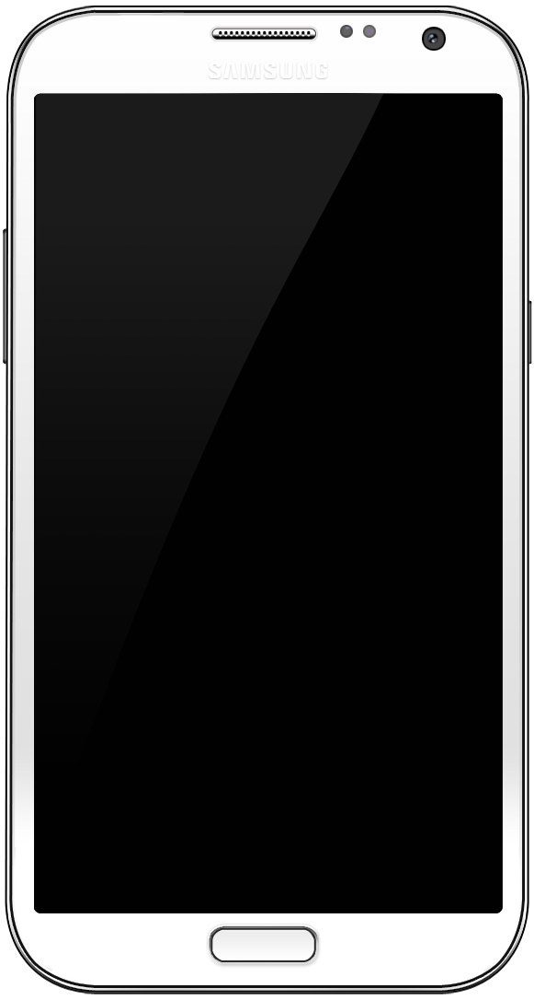

Samsung Galaxy Note II (samsung-t03g)
|

Samsung Galaxy Note II |
|
| Manufacturer | Samsung |
|---|---|
| Name | Galaxy Note II |
| Codename | samsung-t03g |
| Released | 2012 |
| Category | testing |
| Original software | Android 4.1.1 on Linux 3.0.31 |
| postmarketOS kernel | 5.17.1 |
| Hardware | |
| Chipset | Exynos 4412 |
| CPU | Quad-core 1.6 GHz Cortex-A9 |
| GPU | Mali-400 MP4 |
| Display | 720x1280 AMOLED |
| Storage | 16/32/64 GB |
| Memory | 2 GB |
| Architecture | armv7 |
| Unixbench Whet/Dhry score |
302 (single)
/ 890 (multithreaded) |
{kind=link}
| USB Networking |
Works
|
|---|---|
| Flashing |
Works
|
| Touchscreen |
Works
|
| Display |
Works
|
| WiFi |
Partial
|
| FDE |
|
| Mainline |
Works
|
| Battery |
|
| 3D Acceleration |
Works
|
| Audio |
Partial
|
| Bluetooth |
|
| Camera |
|
| GPS |
|
| Mobile data |
|
| SMS |
|
| Calls |
|
| USB OTG |
|
| NFC |
|
| Accelerometer |
|
|---|---|
| Magnetometer |
|
| Ambient Light |
|
| Proximity |
|
| Hall Effect |
|
| Barometer |
|
| Power Sensor |
|
| Keyboard |
|
|---|---|
| Touchpad |
|
| USB-A |
|
| HDMI/DP |
|
| Ir TX |
|
| TrustZone |
|
| FOSS bootloader |
Partial
|
| Primary Bootloader |
Works
|
|---|---|
| Secondary Bootloader |
|
| Mainline |
|
| Internal Storage |
Works
|
| SD card |
Works
|
| USB Host |
Broken
|
| USB Peripheral |
Works
|
| Display |
Works
|
| Keyboard |
|
| Buttons |
Works
|
Contributors
- Bloo
Users owning this device
- Blacksilver
- Km2 ( Notes: Dead emmc, but I have an idea how to restore it)
Display
There is an issue with the display in that the brightness is too high when it turns on. Simply turning down the brightness, even a little, makes it jump to the correct setting.
Audio
Speaker and (main) mic work, but not headphone, as the kernel driver needs work to support that. In its current state the headphone audio is very crackly.
What does not work
- WiFi is not working correctly on the mainline yet
How to enter flash mode
Press and hold "volume down + home + power" simultaneously. Then click volume up to confirm.
Installing system
The device package and kernel is now available, pre-built, from the repositories.
You can install the OS to an SD card or your system partition. I've only tried an SD card:
$ pmbootstrap install --sdcard=/dev/sdb
You will need a 1GB SD card in order for this to work, also keep in mind that this will format the sd card.
Please also note, that you cannot flash directly to the system due to an error in Heimdall.
Next you want to put your phone in download mode by holding
power + vol down + home
all together until you enter download mode, press volume up again to continue past the warning.
Now you can flash the boot image:
$ pmbootstrap flasher flash_kernel
We're using
flash_kernel
because the N7100 packages its kernel and initfs file into one boot image, where as some other phones have separate partitions for each
unlike
the N7100.
If everything checks out OK, your N7100 should reboot and you should see the Samsung logo. Dont worry if the screen is flashing on and off and its taking a while, after a minute or 2 it should show up the pmOS splash!
Getting the S Pen to work on downstream
To get the S Pen working, you might have to do the following:
-
Write the following into
/etc/udev/hwdb.d/60-evdev.hwdb:
$ sudo cat /etc/udev/hwdb.d/60-evdev.hwdb
evdev:name:*e-pen*
EVDEV_ABS_00=::300
EVDEV_ABS_01=::300
(Note: The file's contents should be improved)
- Possibly: update the hwdb
$ sudo udevadm hwdb --update
- Restart the phone
FOSS U-Boot
According to this blog there is a working U-Boot port on the N7100 (and some others). Build from this repository , U-Boot works successfully with SD-card.
Installation
This manual describes installation on sdcard without bootloader in eMMC. U-Boot should boot directly from eMMC but I haven't tested this.
Clone the repository
$ git clone https://github.com/fourkbomb/u-boot $ cd u-boot
Optionally, I made some u-boot patches to fix some issues
- https://gist.github.com/ave4/b4ac6c8a3abd3fd5d5b9f255cb2719d3
- https://gist.github.com/ave4/3e30c7d10eba42e948a78176f4da4326
$ git am 000*
Set up the toolchain
$ export ARCH=arm $ export CROSS_COMPILE=arm-none-eabi-
Build U-Boot
$ make midas_defconfig && make -jN $ ./create_4412_sd_image.sh u-boot.image
Install postmarketOS in the usual way on sdcard and AFTER that write u-boot to sdcard
$ dd if=u-boot.image of=/dev/mmcblkN bs=512 skip=1 seek=1
Mainline Kernel
Thanks in large part to the Midas on Mainline work that was done a few years ago, we now have initial mainline support for this device.
The merged request which added mainline support in PostmarketOS is here .
This device's pmaports repo, Samsung-t03g, is current in "testing" here .
There is a downstream patch to create a necessary exynos4412-n7100 specific DTS for this device in the mainline kernel, as opposed to the current more generic exynos4412-n710x DTS, but it has yet to be submitted upstream. Please feel free to submit this patch on behalf of the author if you are willing and able.
The Replicant project is interested in further mainlining this device and replacing the bootloader with u-boot and would like to collaborate with us [1] .
See also
- more specs
- Unofficial TWRP kernel repo
- Exynos4412 Galaxy Note II hardware table for t03g (and t0lte ) variants.